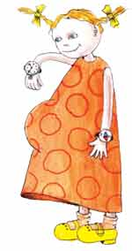

Три триместра
Низкий старт
Полный вперед
До скорой встречи!

Еще никто ничего не замечает, но вы уже прекрасно знаете, что беременны. Вы постепенно привыкаете к этой мысли, слегка замедляете ритм своей жизни, а иногда с удивлением отмечаете перемены в настроении и поведении.
Первые 13 недель «интересного» положения принято называть 1-м триместром беременности. С чего он начинается? С небольшого теста, который позволит вам убедиться, что задержка менструации неслучайна. Его можно сделать дома или обратиться в специальную гормональную лабораторию. Кроме того, стоит внимательнее наблюдать за собой: тошнота, рвота, сонливость, плаксивость, раздражительность, увеличившаяся грудь подтвердят наши догадки.
Как все начинается?
В течение первых шести дней после зачатия зародыш «путешествует», продвигаясь по маточной трубе. Потом он попадает в полость матки и прикрепляется к слизистой оболочке ее стенок (происходит так называемая имплантация). Первые шесть дней жизни зародыш живет автономно, как цыпленок в яйце, питается своими запасами и с мамой никак не связан. После того как происходит имплантация, между ребенком и женщиной возникает связь через пуповину и ветвистый хорион, который образуется на месте прикрепления плодного яйца к слизистой матки. К 16-й неделе беременности ветвистый хорион превращается в плаценту.
На 5-й неделе желтое тело яичника, вырабатывающее гормон прогестерон для поддержки беременности, достигает пика, и в организме женщины происходит самый настоящий гормональный взрыв. Из-за этого будущая мама часто бывает, плаксива, раздражительна, быстро устает, на лице у нее могут появиться отеки. Кроме этого, к 5-6-й неделе тошнота и рвота часто усиливаются, грудь становится более чувствительной и даже болезненной, кожа вокруг сосков темнеет. Матка растет, давит на мочевой пузырь, заставляя будущую маму чаще бегать в туалет, и на прямую кишку, что может вызывать запоры, а из влагалища я больше секрета.
Новая встреча
В первом триместре беременности вам предстоит познакомиться с акушером-гинекологом из женской консультации, который оценит состояние вашего организма, направит на дополнительные обследования и консультации, посоветует, как справиться с тревожным состоянием. Кроме того, врач даст рекомендации по образу жизни, поведению и питанию.
Испытание на прочность
Какие проблемы со здоровьем могут возникнуть в первые недели беременности?
- Обмороки
- Тошнота, рвота, потеря веса
- Кровяные выделении
- Боли в низу живота
Что делать?
Уложите будущую маму так, чтобы ее голова оказалась ниже уровня сердца, дайте ей выпить сладкого крепкого чая, откройте окна в комнате. Чтобы избежать обмороков, врач посоветует вам больше гулять (особенно перед сном), избегать душных помещений и курящих компаний.
Что делать?
Обратитесь к врачу, сдайте анализ мочи на ацетон, утром, не вставая с постели, ешьте что-нибудь «маленькое (например, печенье), в течение дня питайтесь часто и маленькими порциями.
Что делать?
Лягте, успокойтесь и наберите «03». Часто случается, что кровяные выделения появляются в дни предполагаемой менструации. Обычно это бывает у женщин, которые еще до беременности имели проблемы с менструальным циклом (овуляция происходила не в середине цикла, а незадолго до «месячных»). В любом случае акушер-гинеколог должен выяснить, почему появляются кровяные выделения, и назначить лечение. Если причина кроется в гормональной недостаточности, понадобится пройти специальное обследование, и затем врач назначит мини-дозы гормонов, которые необходимы, чтобы сохранить беременность. Если же это происходит из-за неправильного расположения ветвистого хориона, что можно выяснить при УЗ - обследовании, вам порекомендуют постельный режим и успокаивающие средства.
Что делать?
Лягте, успокойтесь, примите удобное положение, можете ввести в прямую кишку свечу с папаверином. Если боли не проходят или часто повторяются, обратитесь к врачу.
Как себя вести?
Для того чтобы ребенку было комфортно, и он получал необходимое количество питательных веществ и кислорода (все это поступает к нему через кровь), постарайтесь вести правильный образ жизни. Помните, что ночью нужно спать не меньше 8-10 часов, больше бывайте на свежем воздухе, например, перед сном гуляйте вместе с мужем. Если по утрам вас тошнит, то связано с низким уровнем сахара в крови, попробуйте, перед тем как встать с постели, съесть печенье или яблоко. В начале беременности не ограничивайте себя в выборе еды: вам можно есть почти все, что захочется, только не очень много. Старайтесь, чтобы в ваш рацион входило больше молочных продуктов, мяса, соков, фруктов и овощей. Не забывайте про продукты, которые содержат клетчатку и помогают кишечнику работать. Ради здоровья малыша откажитесь от курения и спиртных напитков. Известно, что алкоголь может нанести вред ребенку и вызвать у него алкогольный синдром, который потом станет причиной его умственной отсталости. Курение приводит к прерыванию беременности, кроме того, малыш может родиться с низким весом. Инфекции, работа с химическими препаратами или с компьютером в большом объеме на ранних сроках беременности могут спровоцировать остановку развития ребенка. Это связано с тем, что в первые восемь недель идет закладка всех органов и систем маленького организма, и любое вредное воздействие может вызвать порок сердца, нарушения в развитии ЦНС.
Что происходит с вами в первый месяц беременности? Матка, которая до начала 9-месячного ожидания была размером с мандарин, активно растет. Грудь напряжена и очень чувствительна, а иногда даже болезненна.
В первые 6 дней эмбрион никак не связан с мамой. Его сердце начнет работать через 23 дня.
Чтобы уменьшить тошноту, ешьте то, что хочется, часто и маленькими порциями. Пейте чай из трав (мяты, имбиря), который помогает уменьшить тошноту. Не ешьте острую и жирную пищу, избегайте сильных запахов, дымных и душных помещений.
Во втором триместре беременности в организме будущей мамы происходит много изменений. Например, всем, наконец, становится понятно, почему вы вдруг так понравились: матка покидает область малого таза, находится теперь выше лонного сочленения и выглядит, как маленькая горка. Из-за этого ваша фигура округляется, талия становится больше. Под действием гормонов грудь увеличивается в размерах, кожа ареолы темнеет, из соска начинает понемногу выделяться молозиво. Чтобы подготовить молочные железы к кормлению, каждый день растирайте их махровым полотенцем, а потом принимайте воздушные ванны.
Особое внимание
- К 16-й неделе беременности заканчивается закладка внутренних органов будущего ребенка и сформирование плаценты. Теперь именно она будет отвечать за поставки кислорода и питательных веществ малышу, и выводить отработанные продукты обмена. Кроме того, плацента начнет вырабатывать гормоны, необходимые для нормального течения беременности и будет стараться не пропускать к малышу вредные вещества из внешней среды.
- Начиная с 20-й недели беременности, врачи советуют будущим мамам носить бандаж, который поддерживает увеличивающийся живот, предупреждая, таким образом, угрозу прерывания беременности и появление растяжек. Кстати, с растяжками на животе и на груди можно бороться, делая массаж легкими поверхностными пощипываниями кожи.
- Примерно в 18 недель начните особенно внимательно прислушиваться к тому, что происходит у вас внутри: обычно именно в это время шевеления ребенка становятся заметными. Если же вы ждете первенца, вы почувствуете его движения на 20-й неделе. Запомните это число и сообщите его вашему врачу.
- После 24-й недели беременности активность ребенка может, вызывал: кратковременные напряжения матки, напоминающие схватки. Обычно они не доставляют будущей маме неприятных ощущений, продолжаются 1-2 минуты и повторяются 10-15 раз в день. В чем причина «схваток»? Матка начинает готовиться к родам, учится сокращаться и расслабляться. Полежите немного на боку и подождите, пока пройдет напряжение. Если оно доставляет вам неприятные ощущения, обязательно расскажите об этом врачу.
Как себя вести?

Главное - не считайте себя больной и ведите обычный образ жизни, только немного щадите себя. Если есть возможность, летом живите за городом, кроме того, старайтесь больше времени уделять активному отдыху, двигайтесь, гуляйте на свежем воздухе (не по магазинам!), занимайтесь гимнастикой, физкультурой для будущих мам дома или в специальной группе. Старайтесь избегать шумных компаний, прокуренных или душных помещений, а праздники лучше встречайте в кругу семьи. Если вам очень хочется выпить немного шампанского - выпейте; от полученного удовольствия в организме выделятся гормоны радости - эндорфины. А чтобы избежать проблем с пищеварением, до праздничного стола примите две таблетки активированного угля. Не увлекайтесь угощениями, ешьте больше фруктов и овощей и, как только устанете, ложитесь спать.
Можно ли заниматься сексом во время беременности? Если она протекает нормально (нет угрозы прерывания, плацента расположена нормально), тогда да. Половая жизнь не вредит ни беременности, ни будущему малышу. Тем более что во втором триместре неприятные ощущения, недомогания, которые часто встречаются в начале 9-месячного ожидания, проходят, и супруги могут познать удивительные мгновения любви. И еще один приятный момент; теперь вам не нужно думать о контрацепции и беспокоиться, о последствиях!
С четырнадцатой недели начинается второй триместр беременности, который принято считать самым спокойным и приятным. Вы еще не сильно поправились, можете позволить себе много гулять, заниматься физкультурой (плаванием, гимнастикой), ходить в театры и на выставки.
Идеальной пищей для малыша первого года жизни является грудное молоко, адаптированное к особенностям его пищеварительной системы. Оно содержит все необходимые вещества и микроэлементы в оптимальном соотношении, повышает устойчивость малыша к инфекциям, защищает от болезней и предупреждает аллергию. Более того, мамино молоко – это продукт который производится «по индивидуальному заказу» ребенка: каждому младенцу необходим свой, строго определенный состав питательных веществ, а организм матери чутко реагирует на малейшие изменения в состоянии малыша, вырабатывая именно те компоненты грудного молока, которые необходимы ребенку в каждый конкретный период его развития.
Во втором триместре беременности живот округляется, а талия продолжает исчезать. То, что вы попали в «интересное» положение, становится заметно. А что же малыш? Он внимательно прислушивается к тому, что происходит вокруг, и вздрагивает, если слышит резкие звуки.
Вот и наступила последняя треть долгого ожидания. Скоро все изменится, вы перестанете быть будущей мамой, а станете самой настоящей, единственной и любимой для того человечка, который пока еще не родился, но чье присутствие вы ощущаете каждый день.
В третьем триместре социальный статус малыша претерпевает изменения: если до 28-недели врачи называли его плодом, то теперь он становится ребенком. Это можно считать его первым днем рождения.
Общая информация
- Малыш растет, и с каждым месяцем высота дна матки над лоном (ВДМ) увеличивается: в начале третьего триместра она составляет 29-30 см, а к 35-36-й неделям - 36-37 см. Иногда вам становится трудно дышать в положении лежа. Чтобы облегчить это состояние, попробуйте спать полусидя. А чтобы дно матки меньше давило на желудок, ешьте чаще и маленькими порциями.
- Матка продолжает расти, и время от времени (до 10 раз в сутки) ее мышцы начинают напрягаться. Это не опасно и говорит лишь о том, что матка готовится к предстоящим родам. Чтобы напряжение быстрее прошло, прилягте и примите удобное положение. Если же неприятные ощущения не исчезают, лучше обратитесь к врачу.
- Примерно за две недели до родов высота дна матки уменьшится, головка ребенка опустится вниз, в область малого таза, вам станет тяжелее ходить и придется чаще отлучаться в туалет «по-маленькому».
Под контролем
В третьем триместре серьезно следите за весом: считается, что в день будущая мама может прибавлять не больше 50 г, а в неделю - около 300 г. Особое внимание нужно обратить на количество выливаемой жидкости: в сутки оно не должно превышать 1,5 л, включая суп, чай, соки, молоко и фрукты. Плюс к этому следите за тем, чтобы из организма выделялось достаточно мочи. В норме ее объем должен быть больше количества выпитой за сутки жидкости. Если же мочи выделяется меньше, это может привести к разным сложностям. Попробуйте решить проблему с помощью врача.
Как себя вести?
По российскому законодательству в 30 недель будущей маме дают декретный отпуск сроком на 20 недель (в случае двойни - с 28 недель беременности на 22 недели). К этому же моменту врач женской консультации оформляет обменную карту, в которую вносит данные обо всех болезнях, беременностях и результатах медицинских обследовании.
Экстренные ситуации
Что должно вас насторожить?
- Отеки на ногах, руках, животе и лице - первый признак водянки. Обязательно обратитесь к врачу: если вовремя не разобраться с этой проблемой, осложнение будет прогрессировать. К отекам может добавиться повышенное давление и белок в моче, то есть появятся признаки нефропатии, и такое состояние придется лечить в роддоме.
- Яркие кровяные выделения. Они могут быть связаны с неправильным расположением плаценты или угрозой преждевременных родов. Вызовите «Скорую».
- Боли в животе (на сроке до 37 недель). Лягте поудобнее, успокойтесь и расслабьтесь. Если неприятные ощущения пройдут, значит, они были связаны с ростом матки и ничего страшного в них нет, Если же боль продолжается, лучше вызовите «Скорую».
- Ребенок не шевелится. Обратитесь в женскую консультацию и сделайте УЗИ.
- После прогулки заболели ноги или набухли вены. Это может быть симптомом варикозного расширения. Меньше гуляйте, дома отдыхайте лежа на боку, а для оттока крови 2-3 раза в день ложитесь так, чтобы ноги оказывались выше тела.
- У вас случился обморок. Часто это происходит в положении на спине: матка, которая в конце беременности вместе с «содержимым» весит 6-7 кг, давит на нижнюю полую вену. Старайтесь отдыхать на боку.
Чтобы не хотелось пить, ограничьте соль и полностью откажитесь от острой, копченой и жареной пищи, а также концентрированных бульонов.
После 38-й недели беременности развитие малыша полностью завершается. Наконец-то он готов к рождению.

Если вы считаете, что из организма выделяется недостаточно жидкости, это значит, что ваши почки устали работать за двоих. Попробуйте помочь им, сделав специальный сок из равного количества свеклы, моркови огурцов (по 1/3). В день вам нужно выпить один стакан такого коктейля.
В 30 недель беременности положите в сумочку паспорт, обменную карту, страховой полис и не расставайтесь с этими документами до самых родов.
<На главную> <Назад> <Далее>